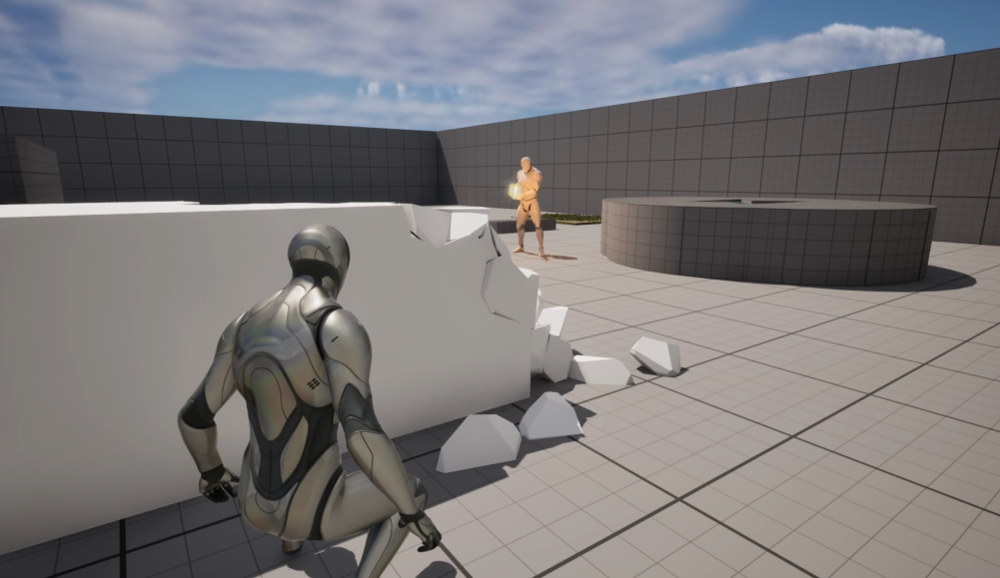
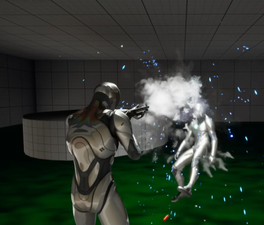
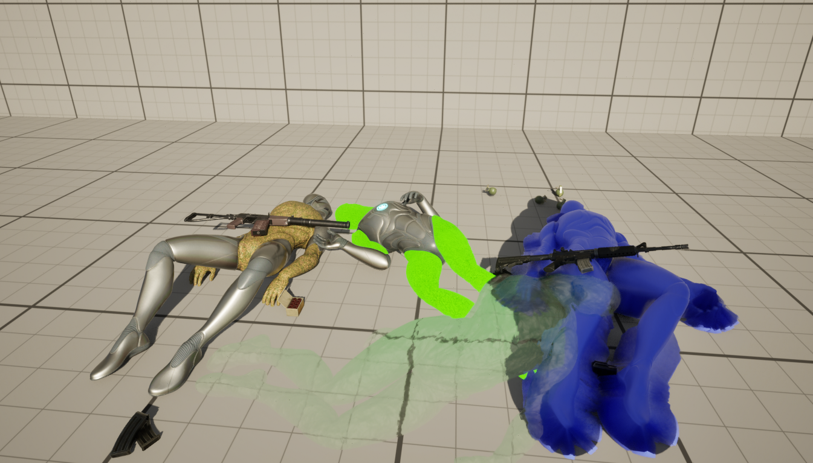

Welcome to Memory Chaos
Step into a world where memories are corrupted and reality bends. Experience the intricate and haunting effects of dementia through our game.
Game Features
- Distorted Memories: Navigate through fragmented and corrupted memories.
- Surreal Environments: Explore environments that shift and change unpredictably.
- Emotional Impact: Experience a narrative that reflects the challenges of dementia.
Media & Screenshots
Get a glimpse of the unsettling world of Memory Chaos with our media gallery.



Latest News
- Website Launch: The Game Website has been launched.
- Optimization: The Game has been converted to baked lighting.